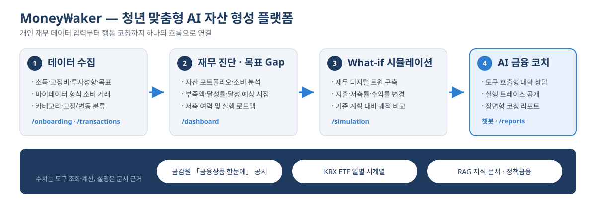
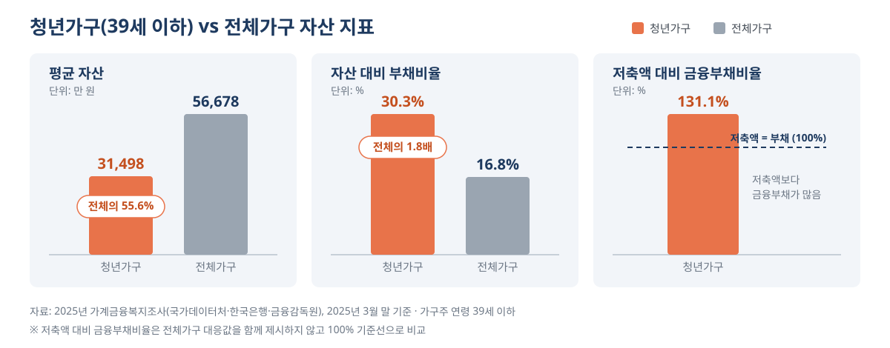
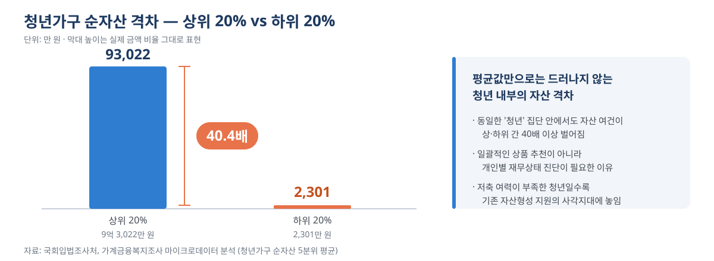
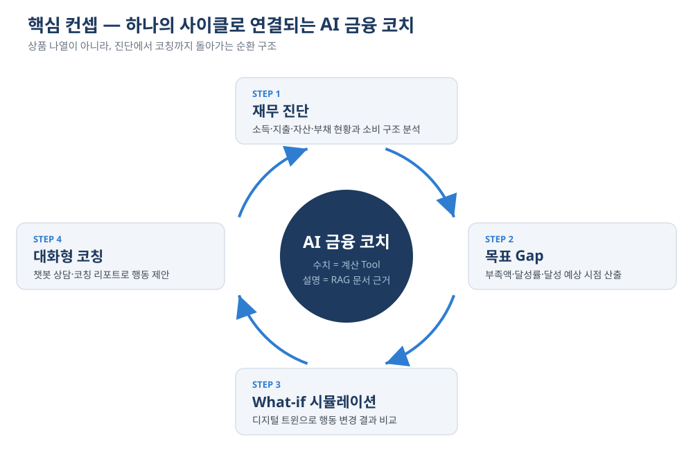
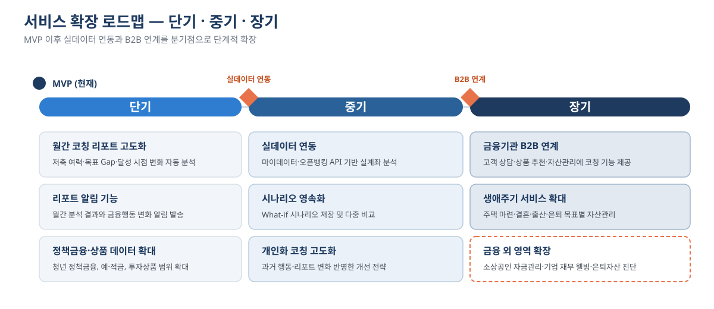

docs/submission/기획서_제출용.md 에 삽입된 도식·그래프 5종 (그림 5·6·7은 앱 화면 캡처로 별도 확보)
데이터 수집 → 재무 진단·목표 Gap → What-if 시뮬레이션 → AI 금융 코치 흐름과 활용 데이터

평균 자산 · 자산 대비 부채비율 · 저축액 대비 금융부채비율 3분할 패널

상위 20% 9억 3,022만 원 vs 하위 20% 2,301만 원

재무 진단 → 목표 Gap → What-if 시뮬레이션 → 대화형 코칭

실데이터 연동과 B2B 연계를 분기점으로 하는 3단계 타임라인

PNG로 내보내려면 — 개별 SVG 파일을 브라우저에서 직접 열고(예: fig02.svg) 확대한 상태로 화면 캡처하거나,
SVG를 그대로 PowerPoint·Figma에 끌어다 놓은 뒤 이미지로 내보내면 됨.
한글(HWP)·PowerPoint 일부 버전은 SVG 삽입 호환성이 낮으므로 최종 제출본 형식에 맞춰 변환할 것.